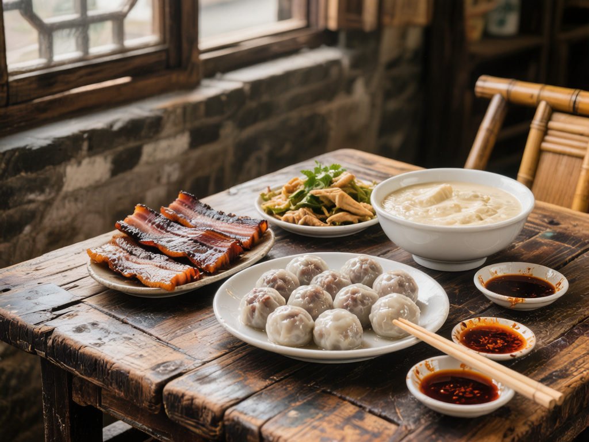

一江三桥吊脚楼，茶马古道慢生活。
在这里，时间仿佛放慢了脚步，带你领略真正的川西水乡
白沫江穿镇而过，吊脚楼沿江而立
夹关古镇位于四川省成都市邛崃市西南部，距今已有2300多年历史。古称"夹门关"、"葭萌关"，因两山夹峙如门而得名。这里是茶马古道和南方丝绸之路的重要驿站，与平乐、固驿并称为"临邛三大古镇"。
古镇依白沫江而建，形成了"两街并立、一江中流、三桥横韵"的独特格局。没有过度开发的商业气息，这里更多保留的是原汁原味的生活气息和深厚的历史文化底蕴。
万福桥、永寿桥、庆元桥横跨白沫江
邛崃黑茶之源，16000亩生态茶园
秦汉驿道遗迹至今依稀可辨
2300年的历史沉淀，孕育了独特的茶马古道文化和感恩情怀
夹关是茶马古道的重要节点，茶叶、药材、盐货在此集散，南岸街码头昔日船筏云集，骡马络绎
万福桥仿赵州桥设计，永寿桥带"羔羊跪乳"石雕，庆元桥寓意"开创通商之始元"，每座桥都有动人故事
两山夹峙如门，一江中流，千年时光在此静静流淌
一步一景，品味川西水乡的独特韵味
三座清代石桥横跨江上，清晨薄雾缭绕，渔人泛舟，宛若水墨画境
清晨薄雾中的古桥倒映在清澈的江面上，岁月静好
古镇南岸16000亩茶园，可体验采茶、漫步茶香小道
清晨薄雾中的古镇，青石板路见证千年历史
古镇周边竹林秘境，呼吸清新空气，享受静谧时光
依白沫江而建的川西传统吊脚楼，水墨画般的古镇风貌
保存完好的川西传统民居，青砖灰瓦，古朴典雅

2000多年历史孕育了独特的马帮菜系，以味美价廉著称
夹关因茶马古道文化孕育了独具特色的马帮菜，以味美价廉著称。2000多年的历史，让这里拥有了正宗的川西马帮菜系。赶集日（农历三、六、九）更能品尝到地道的夹关四绝。
住进风景里，枕茶香入眠
坐落于千亩茶田之中，川西中式院落风格，部分客房拥有全景私汤
设施完善、环境优雅、卫生一流、服务上乘，温馨如家的山景民宿
位于古镇核心区，临江而居，听水声入睡，体验原汁原味的古镇生活
成都出发仅1.5小时，轻松抵达川西秘境
成都 → 成温邛高速 → 邛崃 → S8邛名高速/国道 → 夹关镇
全程约1.5小时，过路费约55元
成都西站/成都南站 → 邛崃站（票价25-35元）
转乘304路公交或小巴士（9元）直达夹关镇
成都茶店子客运站/新南门车站 → 邛崃客运中心
转乘乡村班车前往夹关镇
距离成都市区约120公里
合理规划时间，充分体验古镇魅力
从成都出发抵达夹关，游览三座古桥，走走老街，感受古镇的宁静古朴
在古镇老街品尝夹关四绝：肉汤圆、腌熏肉、过江鸡、嫩豆花
前往南岸万亩茶园，体验采茶乐趣，或漫步竹林秘境，呼吸清新空气
在白沫江边品盖碗茶，看日落，享受慢时光，或住一晚民宿，枕水入眠
每个季节都有独特的风景，等待你来发现
白沫江上晨雾缭绕，万亩茶山绿意盎然，油菜花金黄遍野
川版"小丽江"，竹筏戏水，萤火虫星空，避暑胜地
古银杏金黄，稻田丰收，温暖的胶片质感
人少景美，温暖的羊肉汤，宁静的古镇本真模样